SIA - Dedieu Thomas & Wolski Axel
TD3 - BRDF de Ward
1. Eclairage direct
 Résultats Ward isotrope (éclairage direct) αx = αy = 0.01, 0.1, 0.25, 0.5
Résultats Ward isotrope (éclairage direct) αx = αy = 0.01, 0.1, 0.25, 0.5
αx=0.2 αy=0.1 , αx=0.5 αy=0.1 , αx=0.1 αy=0.2, αx=0.1 αy=0.5
2. Echantillonnage uniforme de la BRDF
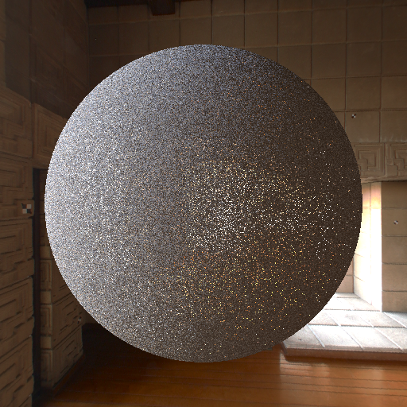
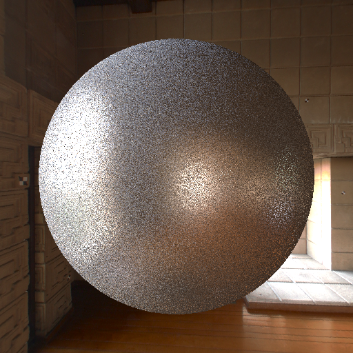
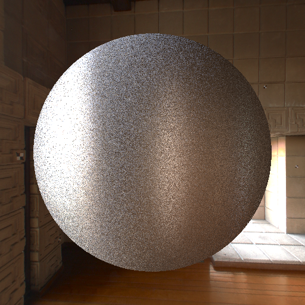
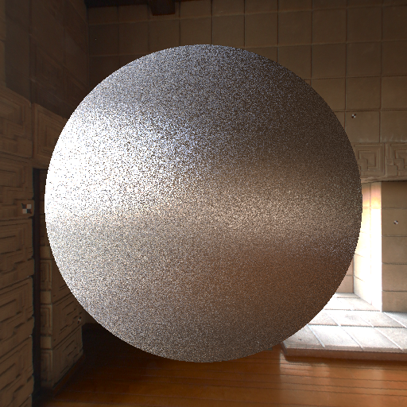
Résultats échantillonnage uniforme αx=αy=0.01 , αx=αy=0.1 , αx=0.5 αy=0.1 , αx=0.1 αy=0.5
3. Echantillonnage préférentiel
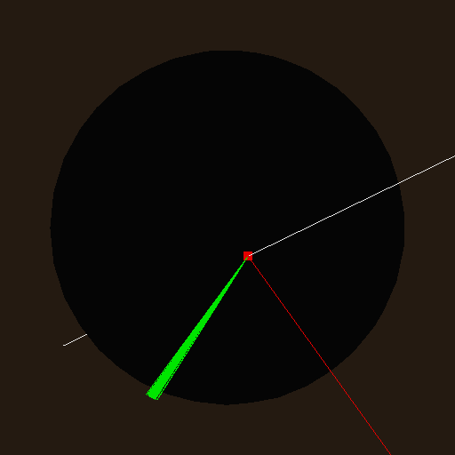

 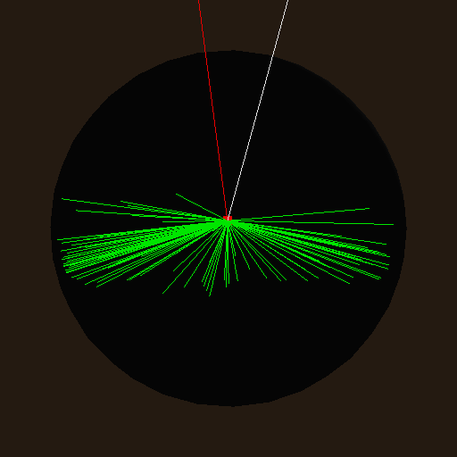
Résultats directions préférentielles αx=αy=0.01 , αx=αy=0.1 , αx=0.5 αy=0.1 , αx=0.1 αy=0.5
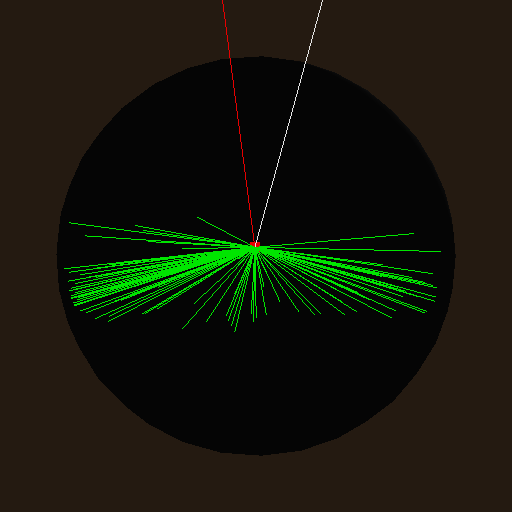
Résultats directions préférentielles αx=αy=0.01 , αx=αy=0.1 , αx=0.5 αy=0.1 , αx=0.1 αy=0.5
if((v>0.25) && (v<=0.5)){
phiH +=M_PI;
}else if((v>0.5)&&(v<0.75)){
phiH -=M_PI;
}
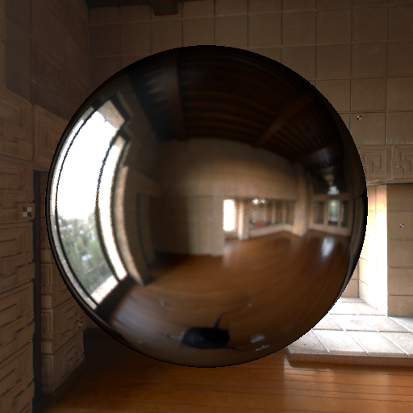
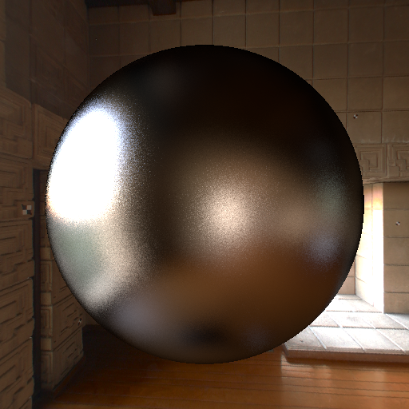
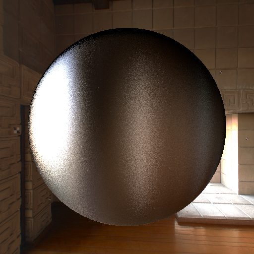
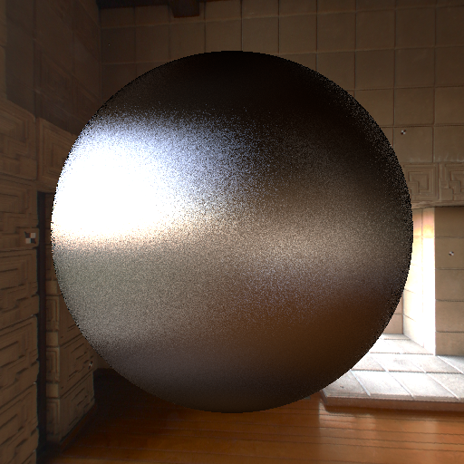
Résultats échantillonnage préférentiel αx=αy=0.01 , αx=αy=0.1 , αx=0.5 αy=0.1 , αx=0.1 αy=0.5
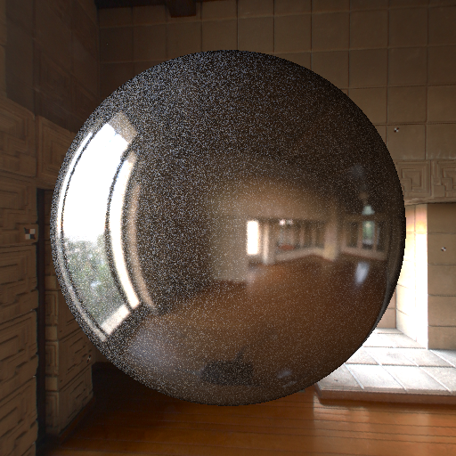
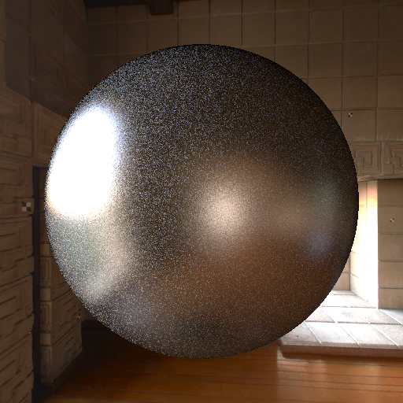
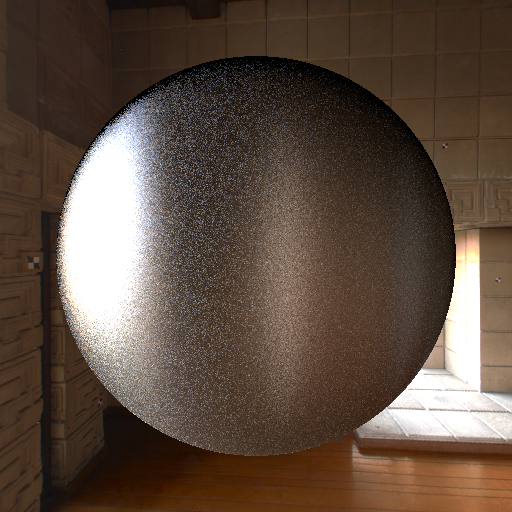
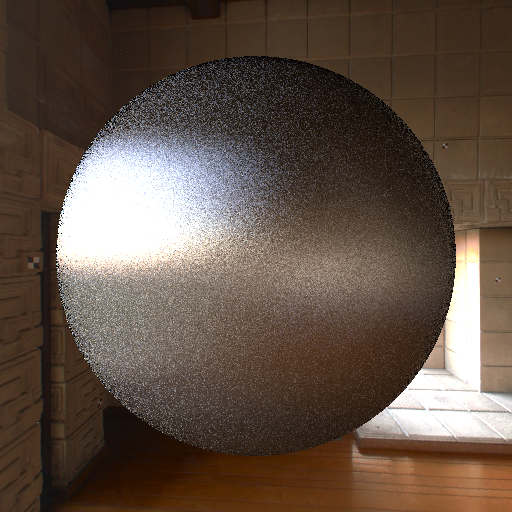
Résultats échantillonnage préférentiel avec direction spéculaire ou diffus αx=αy=0.01 , αx=αy=0.1 , αx=0.5 αy=0.1 , αx=0.1 αy=0.5
Color3f Ward::premultBrdf(const Vector3f& lightDir, const Vector3f& r, const Normal3f& normal, const Vector2f texcoord) const {
Vector3f i = lightDir;
Vector3f h = (i+r)/2.0;
h.normalize();
Color3f w = m_specularColor*h.dot(i)*(h.dot(normal)*h.dot(normal)*h.dot(normal))*sqrt(r.dot(normal)/i.dot(normal));
return w;
}
Vector3f Ward::is(const Normal3f& normal, const Vector3f& lightDir) const {
...
...
if(o.dot(normal)<0){
o = o-2.0*(o.dot(normal))*normal;
}
o.normalize();
return o;
}